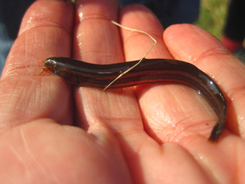

{kind=link}
{kind=link}
{kind=link}
Fische und Neunaugen:
Kartierung, Bewirtschaftung, Fischbergung und Schutz
- Elektrobefischungen (Wat- und Bootsfischerei): Fischbergung an Gewässerbaustellen, gewässerökologische Baubegleitung, Monitoring Fischbestände, Kartierungen, Biomanipulation, Fischentnahme aus geschützten Biotopen.
- Fischereiberatung: Fachliche Beratung bei fischereiwirtschaftlichen und fischökologischen Fragestellungen sowie beim Fischschutz.
- Gewässerrenaturierungen / Biotopmanagement / Gewässerentwicklungsplanung: Anlegen von Laichgebieten, Jungfischhabitaten und Unterständen. Wissenschaftliche Begleitung baulicher Verbesserung der Gewässermorphologie und Hydraulik (variable Strömungsmuster etc). Fischverträgliche Gewässerunterhaltungsmaßnahmen, Fischbergung.
- Durchgängigkeit / Durchwanderbarkeit: Querbauwerke (bewertung und Beratung Konflikt Krebssperren, Mitwirkung bei der Planung von Fischaufstiegs- und Fischabstiegsanlagen, biologische Funktionskontrollen; Problemfelder Mindestwassermenge, Lockströmung/Auffindbarkeit.
- Schadensgutachten Bewertungen von Umweltschäden (Fischsterben, Großmuscheln, Flusskrebse, Wasserqualität).
- Reusenbefischungen / Netzbefischungen verschiedene Fragestellungen
- Schulungen / Vorträge, insbesondere im Umgang mit seltenen und geschützen Fischarten, Rundmäulern, Großmuscheln und Flusskrebsen.
- Bewertung Wirtsfischbestand bei Artenschutzprojekten für die Bachmuschel.
Auswahl durchgeführter Arbeiten
{kind=link}

Ökologische Begleitung der Renaturierungsmaßnahmen im Inneren Ringschluss bei Riegel für den Schlammpeitzger. AG: Regierungspräsidium Freiburg, Obere Fischereibehörde (Bearb.: M. Pfeiffer, M. Haupt & M. Leschner im Jahr 2025).
Monitoring der Groppe, des Bachneunauges und des Steinbeißers im Oosbach-System Monitoringbericht 2025. AG: Mailänder Consult GmbH Karlsruhe, Mathystraße 13, 76133 Karlsruhe (Bearb.: M. Pfeiffer & M. Leschner im Jahr 2025).
Monitoring des Wirtsfischbestandes der Bachmuschel im Oosbach-System. Angelegt auf 5 Jahre. AG: Mailänder Consult GmbH Karlsruhe (Bearb.: M. Pfeiffer, C. Günter & M. Leschner seit dem Jahr 2021).
Minimierungsmaßnahmen im Mühlkanal zur Umweltbaubegleitung - Bauprojekt Fischtreppe Adlermühle in Bahlingen. Monitoring Fisch Auf- und Abstieg. Gemeinde Bahlingen am Kaiserstuhl (Büro gobio in Kooperation mit B. Schmieder in den Jahren 2021-2022).
Gewässerökologische Aufwertung der Alten Elz - Monitoring Entwicklung der Fischfauna Gemeinde Rust (Bearb.: M. Pfeiffer & M. Leschner in den Jahren 2017-2021).
Artenschutzfachliche Beurteilung der Limnofauna (Fische, Makrozoobenthos) der Dreisam für den geplanten Neubau des B 31 Stadttunnels Freiburg. BHM Planungsgesellschaft mbH, Bruchsal (Bearb.: M. Pfeiffer und Mitarbeiter im Jahr 2019).
Artenschutzfachliche Untersuchung der limnischen Tierarten (Fische/Rundmäuler, Muscheln, Flusskrebse, Makrozoobenthos) im Zuge des Ausbaus der A 98, Abschnitt 6. DEGES Deutsche Einheit FernStraßenplanungs- und -bau GmbH, Berlin (Bearb.: M. Pfeiffer und Mitarbeiter im Jahr 2019).
Erhebung der Limnofauna (Fische/Rundmäuler, Flusskrebse, Makrozoobenthos) im Eberbächle im Hexental und Überprüfung der Steinkrebsvorkommen im Gebiet im Zuge der Planungen für ein Hochwasserrückhaltebecken. faktorgruen, Freiburg (Bearb.: M. Pfeiffer und Mitarbeiter im Jahr 2019).
Natur- und artenschutzfachliche Bewertung der Limnofauna (Fische/Rundmäuler, Muscheln, Flusskrebse, Makrozoobenthos) des Kochers in Aalen. Landschaftsplanung Langenholt, Stuttgart (Bearb.: M. Pfeiffer und Mitarbeiter in den Jahren 2018-2019).
Fischereiliche Bestandsaufnahme und Monitoring im Zuge der UVS für einen Wehrrückbau an der Donau. Planungsbüro faktorgruen, Rottweil (Bearb.: M. Pfeiffer und Mitarbeiter, B. Schmieder in den Jahren 2017-2019).
Artenschutzrechtliche Untersuchung der Limnofauna (Fische bis Makrozoobenthos) des Dietenbachs im Zuge der Planungen für den neuen Stadtteil "Dietenbach" der Stadt Freiburg. faktorgruen, Freiburg (Bearb.: M. Pfeiffer und Mitarbeiter im Jahr 2018).
Artenschutzrechtliche Untersuchungen (Fische/Rundmäuler, Muscheln und Flusskrebse) im Zuge des Ausbaus der A6 zwischen Weinsberg und der Landesgrenze BW/BY. Regierungspräsidium Stuttgart, Abteilung 4, Referat 44, Sitz Stuttgart (Bearb.: M. Pfeiffer, M. Mildner, L. Schick, B. Schmieder im Jahr 2017).
Fischbestandsaufnahme und Monitoring am Steinsporen (Rhein) zur einer wasserbaulichen Maßnahme. Regierungspräsidium Freiburg, Abteilung Umwelt, Referat 53.3, Sitz Offenburg (Bearb.: B. Schmieder, M. Pfeiffer und Mitarbeiter in den Jahren 2014/2017).
Weitere Beispiele unserer Arbeit
Monitoring der Groppe im Hotzenwald (2016). Im Auftrag des RP Freiburg, Referat 56, wurden die Groppenbestände im Hotzenwald überprüft.
Erstellung von Artensteckbriefen für naturschonende Gewässerunterhaltung für mehrere Fischarten. WBW Fortbildungsgesellschaft für Gewässerentwicklung mbH, Karlsruhe. (Bearbeiter: M. Pfeiffer und C. Günter in den Jahren 2018-2019).
Bearbeitung der in der FFH-Richtlinie aufgeführten Fisch- und Rundmäulerarten im Zuge zahlreicher Managementpläne, z.B. „Hochschwarzwald um Hinterzarten", "Kandelwald, Roßkopf und Zartener Becken" und "Markgräfler Rheinebene von Neuenburg bis Breisach" (Bearbeiter: M. Pfeiffer und Mitarbeiter).
Mehrere Artenschutzrechtliche Untersuchungen (Fische, Neunaugen, Muscheln und Flusskrebse) im Zuge des Ausbaus der Rheintalbahn in den Planfeststellungsabschnitten 7.1-8.4. Mailänder Consult, Karlsruhe; Kooperationsgemeinschaft Umwelt, Karlsruhe; Gruppe für ökologische Gutachten, Stuttgart. (Bearbeiter: M. Pfeiffer und Mitarbeiter in den Jahren 2017-2019).
Erfassung der Steinbeißervorkommen am nördlichen Oberrhein im Regierungsbezirk Karlsruhe (2015-2016). In Kooperation mit der Fischereibehörde des RP Karlsruhe und dem Landesfischereiverband Baden-Württemberg e.V. wurde die Verbreitung des Steinbeißers erfasst und eine Beschreibung der Habitate vorgenommen.
Zahlreiche Fischbergungen (und ÖBB) im Zuge von Bau- oder Unterhaltungsmaßnahmen für Kommunen, Behörden und Planungsbüros.
Auf der Suche nach dem Schlammpeitzger (Wetterfisch, Furzgrundel) !
In Kooperation mit der Fischereibehörde des Regierungspräsidiums
Freiburg, dem Landesfischereiverband Baden e.V. sowie den örtlichen
Angelvereinen wurde der Schlammpeitzgerbestand in der
Riegeler Pforte im Jahr 2015 erfasst.